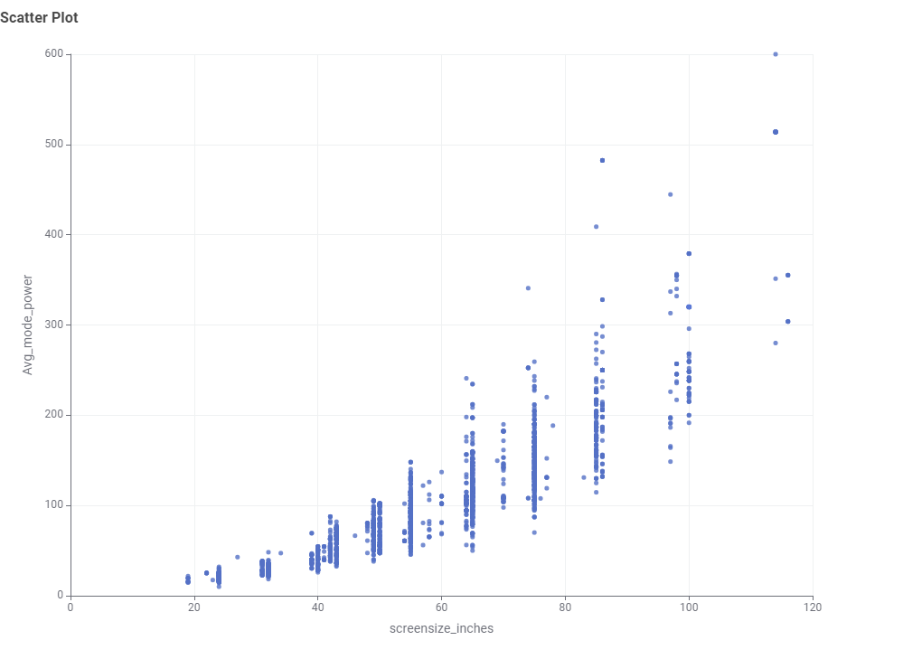

Screen technologies
LCD, LCD (LED) and OLED models are present.
Australian appliance energy data
Explore how screen technology, size and brand relate to the energy performance of televisions available in Australia.
At a glance
The data shows a clear trade-off: larger screens generally require more operating power, while star ratings vary widely at nearly every size.
LCD, LCD (LED) and OLED models are present.
Available sizes range from about 16 to 116 inches.
773 models are listed at this screen size.
LCD has the lowest median among the three technologies.
The central pattern
The screen-size and average-mode-power scatter plot shows a strong positive relationship. The pattern becomes especially visible above 65 inches.
See the evidence
From records to insight
Keep records for televisions sold in Australia and currently available.
Remove duplicates, standardise brands and select relevant columns.
Convert screen measurements to rounded inches for comparison.
Use bar, pie, scatter and box plots to answer focused questions.
Television data story
Each visual answers a specific question using the cleaned and filtered television energy dataset.
LCD (LED) dominates. It represents approximately 83% of the available Australian televisions, well ahead of LCD and OLED.
A bar chart supports precise comparison; the pie chart makes market share immediately visible.
Three categories are present. LCD (LED) accounts for about 3,800 records; LCD about 570; OLED about 300.
Large screens lead the range. There are 47 rounded sizes, from about 16 to 116 inches. The most frequent are 65, 55 and 75 inches.
A bar chart makes it possible to compare the number of available models across discrete screen-size categories.
KOGAN has the widest model range. It leads with 809 models, followed by LG with 723 and Samsung Electronics with 699.
A descending bar chart makes the brand ranking and differences in model count easy to compare.
LCD has the lowest median average-mode power. Its median is about 71 W, compared with roughly 106 W for LCD (LED) and 113 W for OLED.
This compares typical values within the dataset; it does not control for differences in screen size.
The median reduces the influence of unusually high-power outliers and better represents the typical model in each technology group.
Power consumption rises with screen size. The scatter plot shows a strong positive relationship, although models of the same size can still vary substantially.
A scatter plot reveals the direction, strength and spread of the relationship between two numerical variables.
Points rise from the lower-left to the upper-right. Very large screens include the highest-power observations, reaching approximately 600 W.
There is no clear relationship. Large and small televisions both appear across a broad range of star ratings.
Screen size alone does not reliably predict the energy-efficiency rating of a television.
The points form vertical bands at common screen sizes but do not create a consistent upward or downward trend.
Extended exploration
These additional views compare average-mode power across brands. Wide spreads and outliers suggest that model mix and screen size matter alongside brand.
About the project
This website was created for COS30045 to demonstrate HTML, CSS, JavaScript, data preparation and visual communication.
Purpose
The project investigates televisions available in the Australian market. It brings the charts produced during data exploration into a responsive website where the findings can be read as one connected story.
The three views are switched with JavaScript. CSS controls the visual design, hover and active navigation states, responsive layout and accessible focus styles.
Method
The original television dataset contained 5,018 records and 32 columns.
Import the CSV and keep analysis-ready fields.
Remove duplicate television model records.
Retain available televisions sold in Australia.
Convert brand names to uppercase and screen size to rounded inches.
Count, group and summarise records to answer each question.
Academic transparency
Generative AI was used to help structure and refine the HTML, CSS and JavaScript; organise the written findings; and improve responsive and accessible presentation. The dataset processing, analytical questions and supplied charts were reviewed against the KNIME workflow and coursework notes.
The final code and content should be reviewed by the student before submission, with the detailed reflection retained in the repository README.
Data source
Column definitions can be checked against the Energy Rating Data Dictionary for Televisions. Important fields in this analysis include SoldIn, Screen_Tech, screensize_inches, Avg_mode_power, Star Rating Index, Brand_Reg and Model_No.